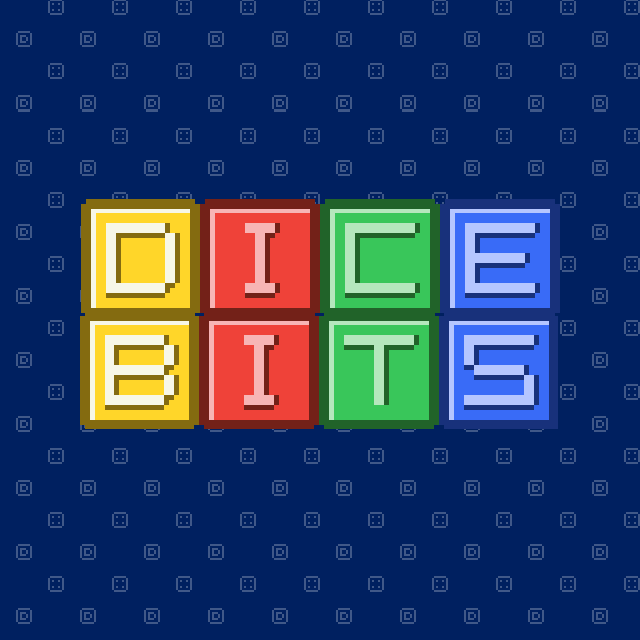

DICEBITS
Dice Royal, reborn as a retro game.
2026
Solo Developer
GameMaker + homemade engines
GBA · Genesis · Game Boy · NES · PICO-8

The story
DICEBITS started out as Dice Royal, a game planned for mobile and PC. Along the way, I ported it to the Game Boy Advance, just for fun (and a bit out of boredom).
It turned out to be so much fun that I decided to fully develop it for the GBA, followed by Genesis, Game Boy, NES and PICO-8 versions. That's also when the game was renamed DICEBITS.
I'm still on track to publish it on Steam, the App Store and Google Play, but for now I might do a few more retro ports. I'm also publishing HTML versions everywhere to test potential revenue streams.
Play the retro versions
On itch.io and Lexaloffle
Also available as Dice Royal
The original desktop and mobile versions